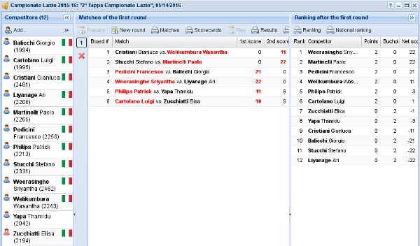
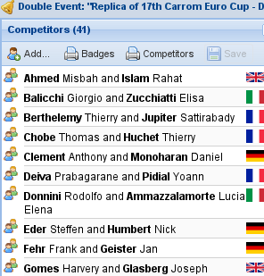
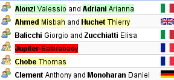
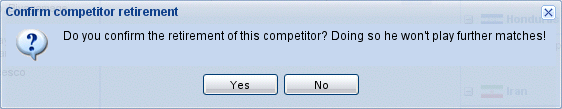
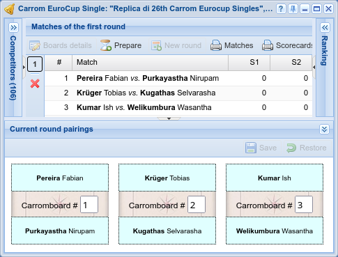
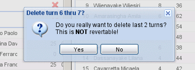

Tourney management¶

Tourney management¶
This is the core window of the application and is composed of four panels.
On the left there's the competitors view, where you can register new players, withdraw existing ones or rearrange them in teams if championship's players per team is bigger than 1 (first round only).
On the right there's the ranking, where you can see the current ranking. .. , possibly grouped by nationality.
At the bottom there's the manual re-pairings view that lets you alter the combination generated automatically for a new round: in almost all cases only the very first round may require such adjustment, but if you know what you are doing you can change the pairings of any new round by ALT-clicking the toggle button.
The remaining space in the middle is dedicated to the matches.
The three panels on the borders can be minimized, thus maximizing the space for the matches. In particular, the one on the left and the one at the bottom are mainly used only just before and just after the first round is created, and thus are automatically minimized.

Competitors panel¶
Competitors¶
This panel is used mainly at the start of a new tourney, to compose the group of participating players. Using drag&drop you can either insert new players or rearrange them in teams, as shown in the figure: you can drag single players from one team to another, or add new players picking them from the players window. The add… button brings up that window, showing only players not yet associated with the tourney.
Note
It is possible to add new players at any time, even when the tournament has already started and some matches has been played: even if this is not usually allowed in official tourneys, in amateur events it may happen that a player is late, or that one person of the public asks to enter the game. In such case, the new player gets zero points and is positioned at the end of the current ranking.

Adjusted teams¶
You can see that there is a new completed team (with a green background); one team is not complete because it has only one player: this has no effect on the succeding operations (it can be played without problems) although it would be quite strange; another team will be deleted (red background) because its only player has been removed.
Hint
Players may be removed from the panel by dragging them and dropping over any empty space (the scrollbar, when the panel is full): the icon associated to the drag operation will reflect the case.
Important
It's not possible to change the composition of a team once the first round has been played, for obvious reasons.
Warning
Although the interface allows to accumulate multiple changes to be committed in one single transaction, when you need to rearrange the composition of several teams, moving players around, it is recommended that you apply and confirm a single change at a time, to avoid incurring in possible integrity errors.

Withdraw confirmation¶
A competitor may be withdrew by double-clicking it and confirming the action: this means that he won't participate to further games. He will show up in the ranking, though.
First round¶
Once the registration has been completed, the next step is to generate the first round of the tournament, that will be done taking into account the current rate of each player if the tourney is linked to a particular rating, otherwise by randomly pairing the competitors.
The tournament secretary may decide that the random combination generated by the application for the first round is not adequate and some manual intervention is required.
To do so, enlarge the panel Current round pairings at the bottom and arbitrarily recombine the matches swapping competitors by drag&dropping them.
To move a particular pair of opponents on a different carromboard, simply change the table number of the pairing.
Note
In exceptional circumstances you may need to manually adjust the pairings of later rounds
too, for example when you are inserting an already played tournament not managed by SoL.
If you know what you are doing, you can do that by expanding the panel keeping the ALT key pressed when you click on the toggle button.

Manual recombination¶
Hint
When there are dozens of tables, augment the height of the panel by dragging its top border.
Should you need to swap two players far away from each other, you can use the mouse wheel to scroll the boards keeping the mouse button pressed while dragging.
The association of matches with the carrom boards is random, for the first round. From the
second on SoL tries to give a different board for each round to a given player, following
ranking order. This guarantees that top players will preferably play on different low-numbered
boards, while weaker ones will use high-numbered boards, possibly repeatedly, in particular
when the number of players (and thus the number of tables) is very low.
Matches¶
The middle panel is where most of the activity happens: here you iteratively create next round, insert its results and compute the new ranking. The buttons on the left side of the grid let you review the results of any played round: also the ranking panel gets reloaded to show the corresponding state.
Attention
Normally only the last round is editable, since the pairings of each turn depend on the results of previous rounds. It is therefore important to pay particular attention in the insertion of the scores.
Note
In major tournaments it should be obligatory to print the results and let them show off for a few minutes (or display them on the monitor).
The winners must check the correctness, before generating the next round.
However it may happen that due to an error of any kind the wrong results have been inserted and thus a correction is necessary.
If the errors appear in the last played round and the next one is not yet started, it's enough to delete the last round (if already generated), rectify the scores and the proceed as usual.

Deletion of rounds¶
If instead the errors are noticed in previous rounds and further rounds were played already,
you can still change them (SoL asks explicit confirmation when you attempt to do so): the
ranking will be recomputed, but obviously the pairing of the later rounds are kept
unchanged.
Last, if the errors are noticed only when the tournaments is terminated, the only possible solution is to manually tweak the assigned final bounties, to get a correct order in the tourney's ranking as well as in the championship's one.
Hint
To insert the results of each round you may follow two distinct strategies:
order the scorecards by board number and then insert the scores of each one: in this case you can use the TAB key that moves the focus to the next field;
when you have many boards (and thus the manual sort would be very tedious), you can “jump” directly to the result of a particular board by simply entering the board number: the focus will be moved to the right row and the score of the first competitor will be activated for editing.
While preparing for the next round, that is when you are entering the scores for the last played turn, check the results and generate the new turn, you can open a countdown in a detachable tab with the Prepare menu entry.
When the new round is ready to be played, you can open a slightly different countdown with the Play entry.
Final round¶
In major events it is possible to play one additional round to determine the top two (or four) positions of the ranking.
SoL historically did not allow to insert the results of these final matches and the only way to
track their outcome was by manually adjusting the final bounties of the tournament. Version
3.1 implemented a proper handling of them: the finals field on the
tourney controls the new behaviour.
When it is set to either 1 or 2, an explicit Final round button appears in
the menu: it generates the final round with one match between the top two competitors in the
ranking and, if the field is set to 2, another one between the third and the fourth
competitors, where the final scores can be eventually entered. When the Final kind
of the tourney is set to Best of three games, up to three additional rounds may be
generated with the usual Next turn button in the menu.
As soon as the final rounds are completed, the prize-giving operation is automatically performed and the tournament ends.
Ranking¶
Whenever you change and commit the results of the last round the ranking is automatically recomputed and shown here. The prize column is usually hidden until prize giving.
Hint
By double-clicking on a competitor the matches panel focuses on him showing only his matches. You can see any other player details by double-clicking on another name. The match panel returns to the usual view either by double-clicking the same player a second time, or when a new round is created.
Once the Bounty-giving is done, the bounty column becomes editable, either to manually force the bounties, or to swap top players after the final.